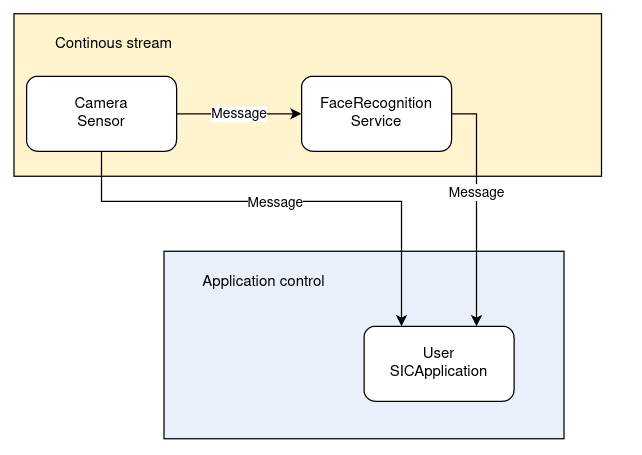

5: Visual Perception
This tutorial shows you how to use a visual perception service to detect objects in the camera feed.
📄 Face Detection Tutorial
Prerequisites
redis server is running
face detection service is running
Code (in separate terminals):
redis-server conf/redis/redis.conf
run-face-detection
Face Detection
Import necessary libraries:
import queue
import cv2
from sic_framework.core import utils_cv2
from sic_framework.core.message_python2 import (
BoundingBoxesMessage,
CompressedImageMessage,
)
from sic_framework.devices.common_desktop.desktop_camera import DesktopCameraConf
from sic_framework.devices.desktop import Desktop
from sic_framework.services.face_detection.face_detection import FaceDetection
Create buffers for image/face objects, define callback functions. Whenever a new image or face detection is received, on_image or on_faces will be called to place the data object into its respective buffer.
imgs_buffer = queue.Queue(maxsize=1)
faces_buffer = queue.Queue(maxsize=1)
def on_image(image_message: CompressedImageMessage):
imgs_buffer.put(image_message.image)
def on_faces(message: BoundingBoxesMessage):
faces_buffer.put(message.bboxes)
Set up the camera, register callback functions:
Display face detection:
The full code can be found here.
📄 Facial Recognition Tutorial
Prerequisites
redis server is running
redis-server conf/redis/redis.confMake sure the dependencies for the face recognition service are installed in your virtual environment
pip install social-interaction-cloud[face-recognition]
Use the following command to start the face recognition service, and pass the model files (the cascade classifier file used in this example can be found here: haarcascade_frontalface_default.xml, and the resnet50 model file can be found here resnet50_ft_weight.pt):
run-face-recognition --model resnet50_ft_weight.pt --cascadefile haarcascade_frontalface_default.xml
Facial recognition
Create a new file with the code below or use demo_desktop_camera_facerecognition.py from GitHub.
Imports and callbacks:
import queue
import cv2
from sic_framework.core.message_python2 import BoundingBoxesMessage
from sic_framework.core.message_python2 import CompressedImageMessage
from sic_framework.core.utils_cv2 import draw_on_image
from sic_framework.devices.desktop.desktop_camera import DesktopCamera
from sic_framework.services.face_recognition_dnn.face_recognition_service import DNNFaceRecognition
imgs_buffer = queue.Queue()
def on_image(image_message: CompressedImageMessage):
try:
imgs_buffer.get_nowait() # remove previous message if its still there
except queue.Empty:
pass
imgs_buffer.put(image_message.image)
faces_buffer = queue.Queue()
def on_faces(message: BoundingBoxesMessage):
try:
faces_buffer.get_nowait() # remove previous message if its still there
except queue.Empty:
pass
faces_buffer.put(message.bboxes)
The actual code:
# Connect to the services
camera = DesktopCamera()
face_rec = DNNFaceRecognition()
# Feed the camera images into the face recognition component
face_rec.connect(camera)
# Send back the outputs to this program
camera.register_callback(on_image)
face_rec.register_callback(on_faces)
while True:
img = imgs_buffer.get()
faces = faces_buffer.get()
for face in faces:
draw_on_image(face, img)
cv2.imshow('', img)
cv2.waitKey(1)
Here is the schematic overview of how this program works. The camera streams its output to the face recognition service, and both stream the output to the program on your laptop.
{kind=link}
